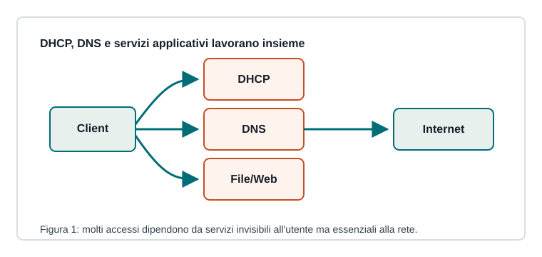

Capitoletto 4.1
Servizi fondamentali
Molte funzioni della rete dipendono da servizi che lavorano in modo silenzioso: assegnano indirizzi, risolvono nomi, condividono file e pubblicano risorse.

DHCP
DHCP assegna automaticamente indirizzo IP, prefisso, gateway e DNS. L'amministratore configura un intervallo di indirizzi, durata del lease e opzioni da distribuire.
Le prenotazioni DHCP collegano un indirizzo a un MAC specifico, utile quando si vuole mantenere configurazione centralizzata ma indirizzo stabile.
DNS
DNS traduce nomi in indirizzi IP. Può risolvere nomi pubblici su Internet o nomi interni, come server della scuola e servizi amministrativi.
| Record | Uso |
|---|---|
| A / AAAA | nome verso indirizzo IPv4 o IPv6 |
| CNAME | alias verso un altro nome |
| MX | server di posta del dominio |
| PTR | risoluzione inversa da IP a nome |
File, web e stampa
Un file server centralizza documenti e permessi; un web server pubblica pagine o applicazioni; un print server gestisce code di stampa e driver. In laboratorio questi servizi semplificano accesso, backup e controllo.
Disponibilità dei servizi
Un servizio deve essere configurato, avviato, monitorato e protetto. Bisogna sapere su quale porta ascolta, quali utenti lo usano e quali dipendenze richiede.
Se DHCP non funziona, molti client non ottengono un IP valido e sembrano “senza rete”, anche se cavi e switch sono corretti.
Ripasso
Perché DHCP semplifica una rete con molti client?
Perché distribuisce automaticamente parametri coerenti evitando configurazioni manuali su ogni dispositivo.
Che cosa fa DNS?
Traduce nomi leggibili in indirizzi IP utilizzabili dai protocolli di rete.